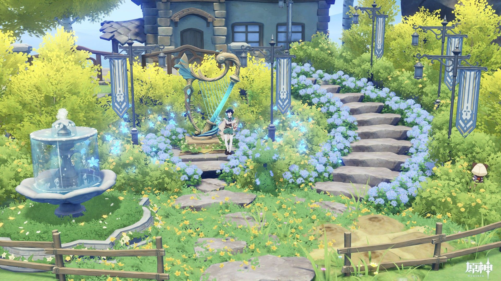

¿Qué es lo que proponemos?
Esta página tiene como fin unir dos pasiones de muchos aficionados a la fantasía.
1- La aventura: llevado de la mano de uno de los videojuegos del momento con esta temática "Genshin Impact" con su historia amplia y sorprendente que no deja de brindar una experiencia totalmente renovadora para los amantes de este tipo de historias.
2: Los paisajes: por eso "Scenery" porque amamos la majestuosidad de los miles de paisajes que rodean el mundo de Teivat, tantos biomas y fantásticas imágenes que dejan volar la imaginación completamente, nos brinda una experiencia que en esta página haremos honor a representar para que puedan explorar cada rincón mágico de este maravilloso mundo.